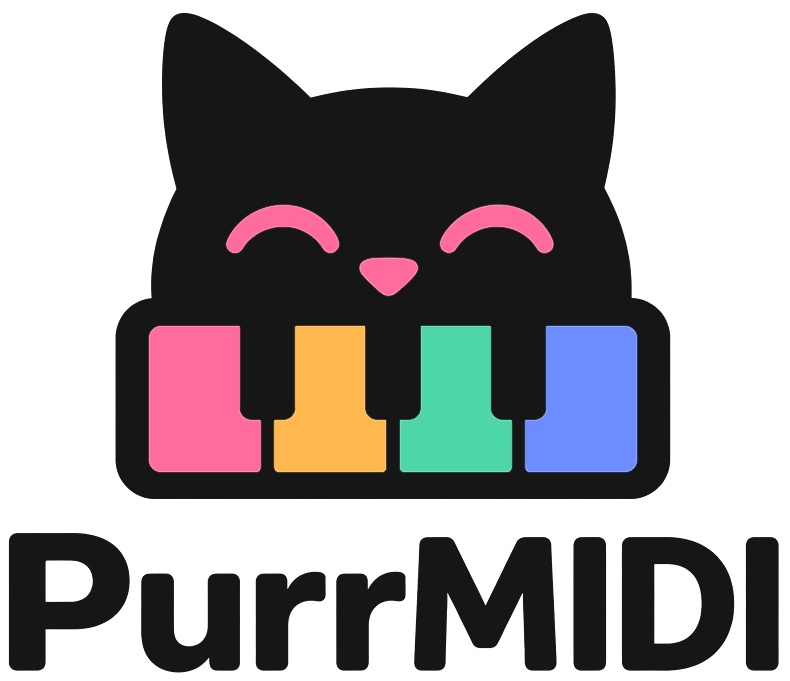

Подключите клавиатуру — и играйте
PurrMIDI — автономный MIDI-синтезатор. USB MIDI-клавиатура подключается к плате, звук создаёт микроконтроллер STM32, а выводит его аудио ЦАП. Компьютер не нужен.
Подключение и первый звук
Шесть звуковых движков
Одновременно звучит один. Переключение — кнопкой на плате или Program Change с клавиатуры.
E-Piano
FM-электропиано в духе Rhodes. Звучит по умолчанию.
Pluck
Гитара с нейлоновыми струнами.
Lead
Аналоговый синтезатор-лид.
Organ
Тонколесный орган.
Violin
Скрипка: физическая модель смычковой струны.
SoundFont
Любой банк SoundFont2 до 8 МБ: каждый пресет банка — отдельный инструмент.
Собрать за вечер
Понадобится немного доступных деталей. Компилировать ничего не нужно. Паять тоже не обязательно, можно соединиить проводами DuPont.
Плата
WeAct STM32H743VIT6 Mini
ЦАП
Модуль PCM5102A
Клавиатура
Любая USB MIDI-клавиатура. Проверены NUX NTK-61 и M-VAVE SMK-25 MINI.
Звук
Наушники или колонки; microSD — только для своего SoundFont.
- Прошейте плату. Скачайте
purrmidi.elfсо страницы релизов и загрузите его через STM32CubeProgrammer. - Подключите ЦАП к трём выводам платы (PE4, PE5, PE6), питанию и земле. Схема — в HARDWARE.md.
- Подключите клавиатуру к USB-разъёму платы. Плата не подаёт 5 В на клавиатуру, поэтому ей нужно внешнее питание (например, через Y-разветвитель).
- Включите питание и играйте. На дисплее появится зелёная точка, название инструмента и нажатые ноты.
Честно о пайке. У популярного фиолетового модуля PCM5102A нужно замкнуть перемычки H1L–H4L и SCK. Подбор модуля, не требующего пайки, — в планах проекта.
Как играть
Инструмент выбирается кнопкой K1 на плате или сообщением Program Change.
| Program Change | Инструмент |
|---|---|
0 | E-Piano |
1 | Pluck |
2 | Lead |
3 | Organ |
4 | Violin |
5, 6, … | Пресеты SoundFont по порядку |
127 | Следующий инструмент (то же делает K1) |
Громкость — ручка CC7, сустейн — педаль CC64. Остальные контроллеры зависят от инструмента, полный список — в ENGINES.md. Выбранный инструмент и громкость запоминаются; после отключения питания они сохраняются только при батарейке 3 В на выводе VBAT.
Свой SoundFont
- Назовите файл
SNDFNT.SF2и положите в корень карты microSD (FAT32). - Размер файла — не более 8 384 512 байт. Если больше, уменьшите его скриптом
SoundFonts/sf2_shrink.pyили программой Polyphone. - Вставьте карту и включите прибор. Запись во флеш занимает 30–60 секунд, ход виден на дисплее.
- Карту можно вынуть: во время игры она не нужна.
Готовые небольшие банки лежат в каталоге SoundFonts.
Что умеет и чего нет
Умеет
- Работать как USB Host с MIDI-клавиатурой
- Шесть движков и банки SoundFont
- Показывать ноты, аккорды и инструмент на дисплее
- Помнить инструмент и громкость
Не умеет (пока)
- USB-MIDI в сторону ПК
- Вход MIDI DIN
- Запись игры
- Питать клавиатуру по USB
Вопросы и ответы
Клавиатура не определяется
Плата не подаёт 5 В на разъём, поэтому клавиатуре нужно внешнее питание. Если плата и клавиатура питаются от одного источника, используйте Y-разветвитель. Точка в шапке дисплея: серая — клавиатуры нет, жёлтая — идёт определение, зелёная — готово.
Нет звука
На модуле PCM5102A должна быть замкнута перемычка H3L на H (иначе ЦАП в режиме Mute) и перемычка SCK на лицевой стороне. Проверьте также пайку и подключение выводов PE4, PE5, PE6.
Звук искажён или громко шумит
Скорее всего, перемычка H4L (FMT) замкнута на H. Для формата I2S она должна быть на L.
Как поменять SoundFont
Положите новый SNDFNT.SF2 на карту microSD, вставьте карту и включите прибор. Банк перезапишется автоматически.
Не нашли ответ? Расскажите о проблеме в Issues: какая клавиатура, что на дисплее и что выводит UART.